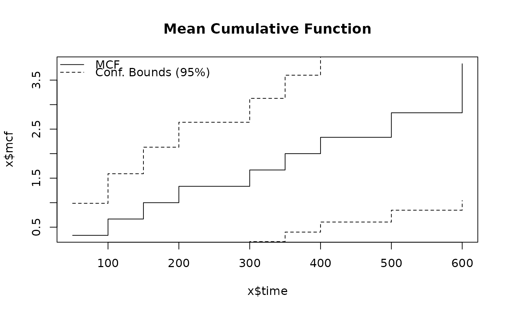

Computes the non-parametric Mean Cumulative Function (MCF) for recurrent event data from one or more repairable systems, using the Nelson-Aalen estimator. The MCF estimates the expected cumulative number of events per system as a function of time, properly accounting for system exposure (observation windows).
Arguments
- id
A vector of system/unit identifiers. Each unique value represents a distinct system. Ignored if
datais provided.- time
A numeric vector of event or censoring times. Must be positive and finite. Ignored if
datais provided.- event
An optional numeric vector of event indicators: 1 for an event, 0 for censoring (end of observation). If
NULL(default), all observations are treated as events.- end_time
An optional named numeric vector of end-of-observation times per system, where names correspond to system identifiers. This defines the actual exposure window for each system. When provided, a system remains in the risk set until its
end_time, even if its last event occurred earlier. IfNULL(default), the end of observation is inferred as the maximum time recorded for each system (from both events and censoring records).- data
An optional data frame containing columns named
id,time, and optionallyeventandend_time.- conf_level
Confidence level for bounds (default 0.95).
Value
An object of class mcf containing:
- time
Unique event times.
- mcf
MCF values at each event time.
- variance
Variance estimates at each event time.
- lower_bounds
Lower confidence bounds.
- upper_bounds
Upper confidence bounds.
- conf_level
Confidence level used.
- n_systems
Number of distinct systems.
- n_events
Total number of events.
- end_times
Named vector of end-of-observation times per system.
Details
The MCF at time \(t\) is estimated as: $$\hat{M}(t) = \sum_{t_j \le t} \frac{d_j}{n_j}$$ where \(d_j\) is the number of events at time \(t_j\) and \(n_j\) is the number of systems still under observation at \(t_j\). Variance is estimated as \(\hat{V}(t) = \sum_{t_j \le t} d_j / n_j^2\).
The risk set \(n_j\) is determined by each system's exposure window.
A system is considered at risk at time \(t_j\) if its end-of-observation
time (from end_time, censoring records, or last event) is
\(\ge t_j\). Specifying end_time is important when systems were
observed beyond their last event – without it, the MCF may overestimate
the true recurrence rate because systems with no late events are assumed to
have left observation at their last event time.
See also
Other Repairable Systems Analysis:
exposure(),
nhpp(),
overlay_nhpp(),
plot.exposure(),
plot.mcf(),
plot.nhpp(),
plot.nhpp_predict(),
predict_nhpp(),
print.exposure(),
print.mcf(),
print.nhpp(),
print.nhpp_predict()
Examples
# Basic usage (end of observation inferred from last event)
id <- c(1, 1, 1, 2, 2, 3, 3, 3, 3)
time <- c(100, 300, 500, 150, 400, 50, 200, 350, 600)
result <- mcf(id, time)
print(result)
#> Mean Cumulative Function (MCF)
#> ------------------------------
#> Number of systems: 3
#> Number of events: 9
#> Total exposure: 1500.00
#> Confidence level: 95%
#>
#> Time MCF Lower (95%) Upper (95%)
#> 50 0.3333 0.0000 0.9867
#> 100 0.6667 0.0000 1.5906
#> 150 1.0000 0.0000 2.1316
#> 200 1.3333 0.0267 2.6400
#> 300 1.6667 0.2058 3.1275
#> 350 2.0000 0.3997 3.6003
#> 400 2.3333 0.6048 4.0619
#> 500 2.8333 0.8463 4.8203
#> 600 3.8333 1.0423 6.6243
plot(result, main = "Mean Cumulative Function")

# With explicit end-of-observation times (exposure-adjusted)
end_time <- c("1" = 800, "2" = 800, "3" = 800)
result2 <- mcf(id, time, end_time = end_time)
print(result2)
#> Mean Cumulative Function (MCF)
#> ------------------------------
#> Number of systems: 3
#> Number of events: 9
#> Total exposure: 2400.00
#> Confidence level: 95%
#>
#> Time MCF Lower (95%) Upper (95%)
#> 50 0.3333 0.0000 0.9867
#> 100 0.6667 0.0000 1.5906
#> 150 1.0000 0.0000 2.1316
#> 200 1.3333 0.0267 2.6400
#> 300 1.6667 0.2058 3.1275
#> 350 2.0000 0.3997 3.6003
#> 400 2.3333 0.6048 4.0619
#> 500 2.6667 0.8188 4.5145
#> 600 3.0000 1.0400 4.9600
df <- data.frame(id = id, time = time)
result3 <- mcf(data = df)
print(result3)
#> Mean Cumulative Function (MCF)
#> ------------------------------
#> Number of systems: 3
#> Number of events: 9
#> Total exposure: 1500.00
#> Confidence level: 95%
#>
#> Time MCF Lower (95%) Upper (95%)
#> 50 0.3333 0.0000 0.9867
#> 100 0.6667 0.0000 1.5906
#> 150 1.0000 0.0000 2.1316
#> 200 1.3333 0.0267 2.6400
#> 300 1.6667 0.2058 3.1275
#> 350 2.0000 0.3997 3.6003
#> 400 2.3333 0.6048 4.0619
#> 500 2.8333 0.8463 4.8203
#> 600 3.8333 1.0423 6.6243